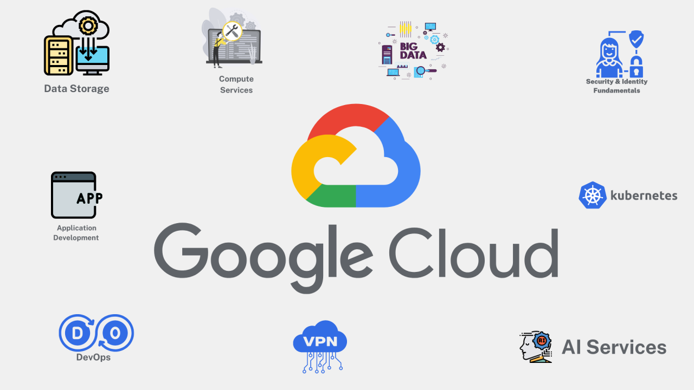

chapter1The cloud is a network of servers, software, and databases that are accessed over the internet. It's made up of
remote servers in data centers around the world that are connected to operate as a single system. Cloud computing
is the on-demand availability of these resources as services over the internet.
Cloudflare
What is the cloud? | Cloud definition | Cloudflare
Cloudflare
What is the Cloud - Definition | Microsoft Azure
Google Cloud
What is Cloud Computing? | Google Cloud
chapter2A private cloud is a cloud computing environment that is dedicated to a single organization or customer. In a private
cloud, the organization controls and maintains all cloud resources, including compute resources like CPU and storage,
which are provisioned on demand through a self-service portal. Private clouds can be hosted on-premises, off-premises,
or on IT infrastructure rented from a cloud provider.
Amazon AWS
What is a Private Cloud? - Amazon AWS
A private cloud is a cloud computing environment dedicated to a single organization. Any cloud infrastructure has
underlying compute resources like CPU and storage that you provision on demand through a self-service portal. In a
private cloud, all resources are isolated and in the control of one organization.
Google Cloud
What is private cloud | Google Cloud
aws.amazon.com
What's the Difference Between Public Cloud and Private Cloud?
In a private cloud, a single organization controls and maintains the underlying infrastructure to deliver the IT
resources. In a public cloud, external cloud providers deliver the resources as a fully managed service. For example,
applications require computing resources like internal memory, data storage, and CPU.
chapter3A public cloud is a model of computing services that are made available to individuals and organizations over the
internet by third-party providers. These services can include storage, applications, and develop-and-deploy
environments. Public cloud services can be free or sold on-demand, with customers paying only for the resources they
use, such as storage, CPU cycles, or bandwidth. This pay-as-you-go model can help companies reduce costs.
Microsoft Azure
What is a Public Cloud - Definition | Microsoft Azure
The public cloud is defined as computing services offered by third-party providers over the public Internet, making them
available to anyone who wants to use or purchase them. They may be free or sold on-demand, allowing customers to pay
only per usage for the CPU cycles, storage, or bandwidth they consume.
Google Cloud
What Is a Public Cloud?
Public cloud defined A public cloud is an IT model where public cloud service providers make computing
services—including compute and storage, develop-and-deploy environments, and applications—available on-demand to
organizations and individuals over the public internet.
Atlassian
What is a Public Cloud & How Does it Work? | Atlassian
chapter4A hybrid cloud is a computing environment that combines a public cloud with an on-premises data center, also
known as a private cloud. This allows data and applications to be shared between the two environments.
Hybrid clouds can offer several benefits, including:
Flexibility
Companies can adjust their infrastructure to work with different types of data in different environments
Cost management
Organizations don't have to own and operate the data center infrastructure, which can be expensive
Agility and scalability
Public cloud providers offer more resource options than an organization's physical data center
Resiliency and interoperability
Businesses can run workloads redundantly in both private and public environments.